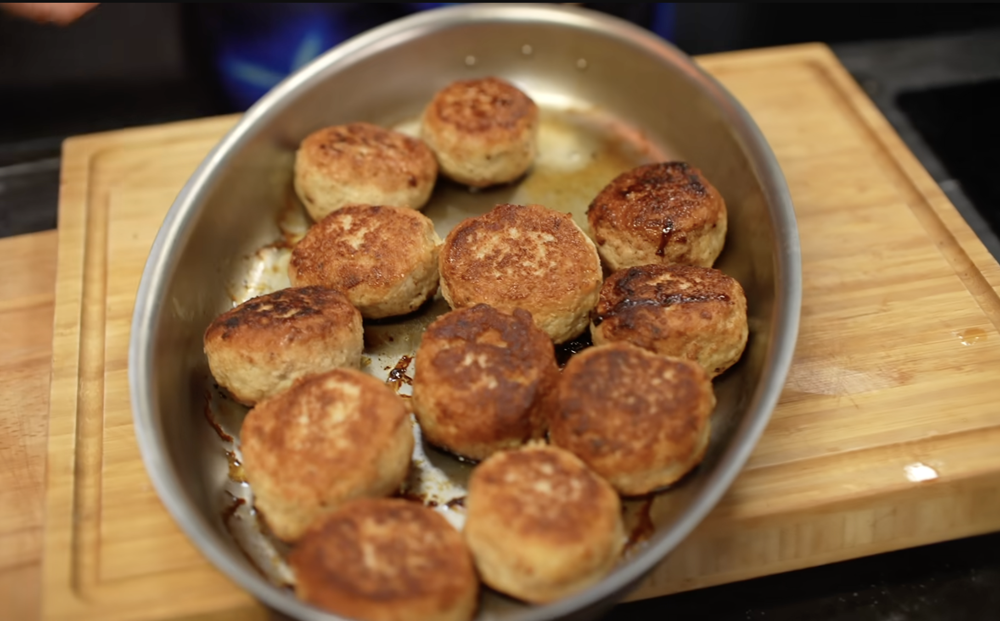
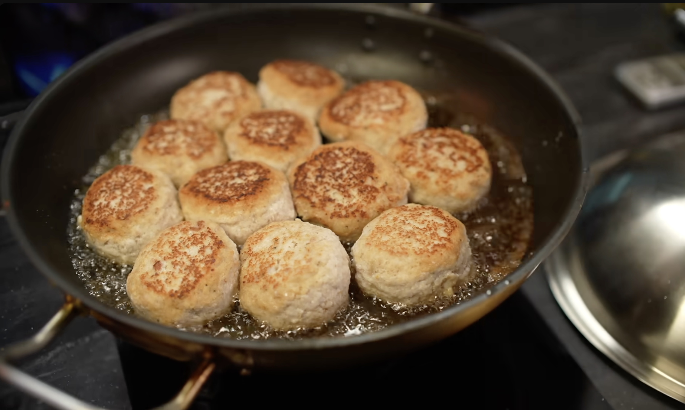

Сочные котлеты
Куриное бедро или филе, сливки и пармезан. Нежные домашние котлеты с насыщенным сливочным вкусом.

Ингредиенты
На 12–13 котлет. Отмечай то, что уже подготовлено.
Основа
Приправы
Количество ингредиентов сохранено из исходной записи. Жирность сливок в ней не указана.
Готовим фарш
Последовательность замеса из домашней записи.
Сливки, чеснок и лук
Очисти лук и чеснок. Нарежь лук крупными кусочками и измельчи в блендере вместе с чесноком и сливками.
Пармезан и масло
Добавь мелко натёртый пармезан и сливочное масло, нарезанное небольшими кубиками. Перемешай в блендере.
Теперь мясо
Добавь нарезанное куриное мясо и измельчи до однородного фарша. Если чаша небольшая, работай порциями, распределив сливочную смесь между ними.
Приправь и добавь сухари
Вмешай 12 г соли и 3 г перца. В последнюю очередь добавь 75 г сухарей и тщательно перемешай.
Сформуй котлеты
Раздели фарш на порции примерно по 125 г и придай им одинаковую форму. По исходной записи получается 12–13 котлет.
От корочки до готовности
Сковорода + духовкаСначала обжарь до румянца, затем доведи в духовке.

Обжарь до корочки
Разогрей сковороду с небольшим количеством растительного масла. Обжаривай котлеты на среднем огне с двух сторон до золотистой корочки, оставляя между ними место.
Доведи в духовке
Переложи котлеты в форму или на противень и доведи до готовности в заранее разогретой духовке. Базовый ориентир — 180 °C; время зависит от толщины котлет и степени обжарки.
Готовность проверяй термометром: не менее 74 °C в центре котлеты. Температура для куриного фарша — USDA. Растительное масло для сковороды используется дополнительно к ингредиентам фарша.